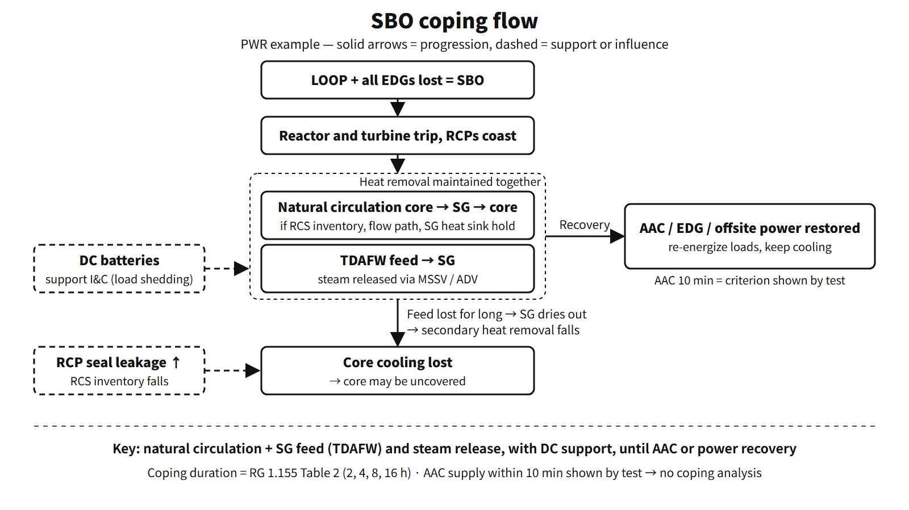

Accidents, Safety Analysis & Severe Accidents · C-SA-009
Station Blackout (SBO) — Definition, Coping Duration, AAC and the Post-Fukushima Requirements
Loss of offsite power and all emergency diesels: natural circulation, turbine-driven feedwater and batteries until AC power returns.
A station blackout (SBO) is the state in which offsite power is lost, the turbine has tripped and the onsite emergency AC sources (EDGs) are also unavailable, so all safety and non-safety AC buses of the plant are de-energized. AC supplied through inverters from batteries and AC supplied by an alternate AC source (AAC) are not counted as lost. This definition follows the wording of 10 CFR 50.2. The same definition also states that no concurrent single failure or design basis accident is assumed.
Principle and mechanism
What stops when offsite and emergency AC are lost
When an SBO begins, the reactor and turbine trip and the reactor coolant pumps (RCPs) coast down. Every AC-driven component stops: motor-driven auxiliary feedwater pumps, charging pumps, safety injection pumps, component cooling water, essential service water, pressurizer heaters and spray, and ventilation. Three things remain.
- Natural circulation: the height and density difference between the core and the steam generators (SGs) keeps the primary side circulating and carries decay heat to the SGs.
- Steam power: the turbine-driven auxiliary feedwater pump (TDAFW) runs on SG steam, so it can feed water without AC. SG steam is released through the main steam safety valves (MSSVs) or atmospheric dump valves (ADVs).
- DC: Class 1E batteries supply instrumentation and control, and the vital AC buses through inverters. Many designs also rely on DC for TDAFW control. Load shedding of unnecessary loads extends the discharge time.
What runs down over time
Coping with an SBO comes down to "what runs out first". RG 1.155 lists battery capacity, condensate storage tank (CST) capacity, compressed air, and instrumentation and control as items for assessing coping capability. RCS inventory is assessed as well.
- RCS inventory: once seal injection and cooling water are lost, the RCP seals leak. With no charging pumps, the loss cannot be made up. RG 1.155 says to assume at least 20 gpm leakage per pump unless a lower value can be justified. Combined with shrinkage from cooldown, pressurizer level falls.
- Secondary water source: the water in the CST or auxiliary feedwater storage tank that the TDAFW draws on sets how long decay heat can be removed.
- Room temperatures: with ventilation stopped, the temperatures in the TDAFW room, main control room and battery rooms rise and equipment performance may degrade.
If coping ultimately fails, the accident proceeds in a set order. When the batteries are depleted, TDAFW control and instrumentation are lost; when the water source runs out, the SGs dry out. The RCS then heats up and pressurizes, and coolant escapes through the pressurizer safety valves. Together with seal leakage, the core is uncovered, cladding oxidation produces hydrogen, and core melting and reactor vessel failure follow. The timing of each step depends strongly on the design and analysis assumptions, so the sequence and the governing factors matter more than any single time value.
![Left: a turbine-driven auxiliary feedwater pump with cards for the pump, MSSV and ADV steam release and Class 1E batteries. Right: a log time axis from 1 minute to 72 hours after SBO onset with rows for AAC connection (10 minutes for no coping analysis, 1 hour availability), minimum coping durations of 2, 4, 8 and 16 hours from RG 1.155 Table 2, equipment for the first 8 hours kept on site, and battery discharge design examples of 8 and 24 hours; below, the beyond-design-basis phases installed equipment, portable equipment and indefinite offsite support](../../assets/images/concepts/c-sa-009-station-blackout/fig1-sbo-coping-timeline.webp)
What it means in a plant
OPR1000 feedwater equipment and water sources
The auxiliary feedwater system of OPR1000 has two motor-driven and two turbine-driven pumps. In an SBO the motor-driven pumps stop, so the turbine-driven pumps feed the SGs. The normal suction source is the condensate storage tank; the backup suction sources are the demineralized water tank or the raw water storage tank, connected through normally closed manual valves. APR1400 uses two safety-class auxiliary feedwater storage tanks as its water source.
The APR1400 example (US design certification)
| Item | US design certification APR1400 (DC) |
|---|---|
| EDGs | 4 trains, 4 units |
| AAC | Non-1E gas turbine AAC, connected within 10 minutes |
| Batteries | 24 h design |
| SBO coping duration | 16 h |
RG 1.155 requires that the AAC be connectable to one or all of the redundant safety buses as needed.
Operating experience
- Fukushima Daiichi (2011): after the earthquake cut offsite power, the EDGs started. But the tsunami flooded the EDGs and switchgear, putting Units 1–3 into SBO, and Units 1 and 2 lost DC as well. The cores of Units 1–3 were damaged, and hydrogen explosions occurred in the reactor buildings of Units 1, 3 and 4. One air-cooled EDG at Unit 6 survived and kept Units 5 and 6 cooled (IAEA 2015 report).
Regulatory and design criteria
The criteria below are examples from the United States (US NRC).
| Basis | Key point |
|---|---|
| 10 CFR 50.2 | Definitions of SBO and AAC |
| 10 CFR 50.63 (1988) | Withstand and recover from an SBO for the specified duration, demonstrated by coping analysis; no coping analysis needed if tests show the AAC can power the shutdown buses within 10 minutes |
| RG 1.155 (1988) | Coping durations of 2–16 h (Table 2), EDG target reliability 0.95/0.975, AAC available within 1 h, equipment for the first 8 h kept on site |
| 10 CFR 50.155 (2019) | Beyond-design-basis external events: assume loss of all AC and loss of normal access to the ultimate heat sink at the same time; maintain core, containment and spent fuel pool cooling indefinitely with offsite support |
How the coping duration is set
10 CFR 50.63 requires the coping duration to be based on four factors: the redundancy of the onsite emergency AC sources, their reliability, the expected frequency of loss of offsite power, and the expected time to restore offsite power. RG 1.155 Table 2 turns these into a table, and the values are minimum coping durations set by plant characteristics. If coping capability is credited with an AAC, coping only needs to be demonstrated from the start of the SBO until the AAC and the required equipment are aligned; if that time is shown by test to be 10 minutes or less, no coping analysis is needed.
| Offsite power group | A (0.975/0.95) | B (0.975/0.95) | C (0.975/0.95) | D (0.975) |
|---|---|---|---|---|
| P1 | 2 / 2 | 4 / 4 | 4 / 4 | 4 |
| P2 | 4 / 4 | 4 / 4 | 4 / 8 | 8 |
| P3 | 4 / 8 | 4 / 8 | 8 / 16 | 8 |
Values are in hours. A–D are redundancy groups set by the number of emergency AC sources relative to the number needed, and P1–P3 are offsite power characteristic groups set by site climate and grid configuration. If a group D plant falls short of the reliability target, it moves up one step (4 → 8, 8 → 16 h).
Post-Fukushima developments
50.63 and RG 1.155 were the original basis of SBO coping. After Fukushima, the US issued Order EA-12-049 (FLEX) and created 10 CFR 50.155 in 2019.
Easily confused pairs
| LOOP | SBO | ELAP | |
|---|---|---|---|
| What is lost | Offsite power | Offsite + EDGs | Offsite + EDGs + AAC |
| AC remaining | EDGs supply the safety buses | None until the AAC is connected (inverter AC only) | Inverter AC only, long term |
| Nature | Design basis event | Event with a specified coping duration under 50.63 | Beyond design basis (50.155) |
| Main response | Sequential EDG loading | TDAFW and DC, AAC in 10 minutes | Installed equipment → portable equipment → offsite support |
Key points at a glance
- Definition: LOOP + turbine trip + loss of onsite emergency AC (EDGs), so all AC buses are de-energized (10 CFR 50.2); inverter and AAC buses excluded.
- Causes: loss of offsite power from grid instability, typhoons, tsunamis and the like + common-cause failure of the EDGs.
- Behavior: reactor and turbine trip, RCP coastdown → natural circulation.
- Coping means: TDAFW → SG → MSSV/ADV; Class 1E batteries (load shedding).
- Threats: battery depletion, feedwater source depletion, RCP seal leakage (20 gpm per RCP assumed), room heat-up.
- Coping duration: four factors of 50.63 → RG 1.155 Table 2 (2, 4, 8 or 16 h depending on plant characteristics).
- AAC: manual connection; no coping analysis if 10 minutes is demonstrated by test; available within 1 h.
- If coping fails: SG dry-out → RCS pressurization and release → core uncovery and hydrogen → melting.
- Later requirements: 50.155 and the three FLEX phases.
- APR1400 example: 4 EDGs + non-1E gas turbine AAC, 24 h batteries, 16 h coping duration (US DC).
